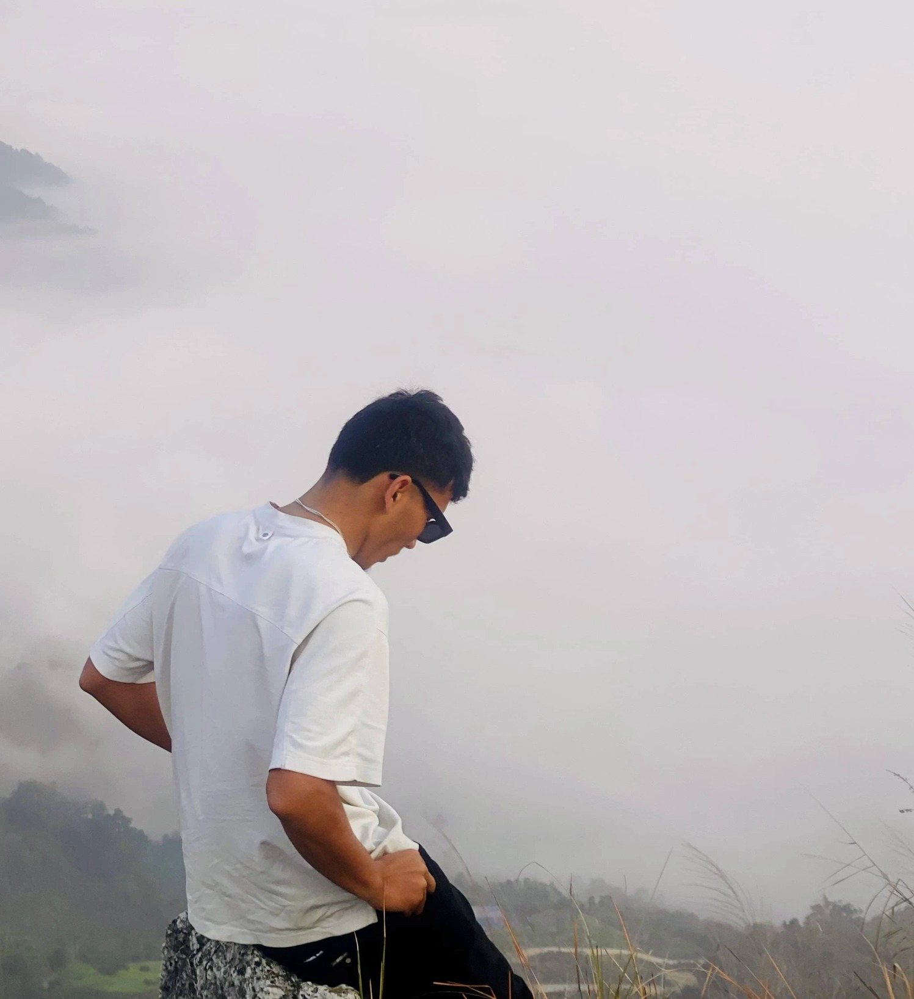
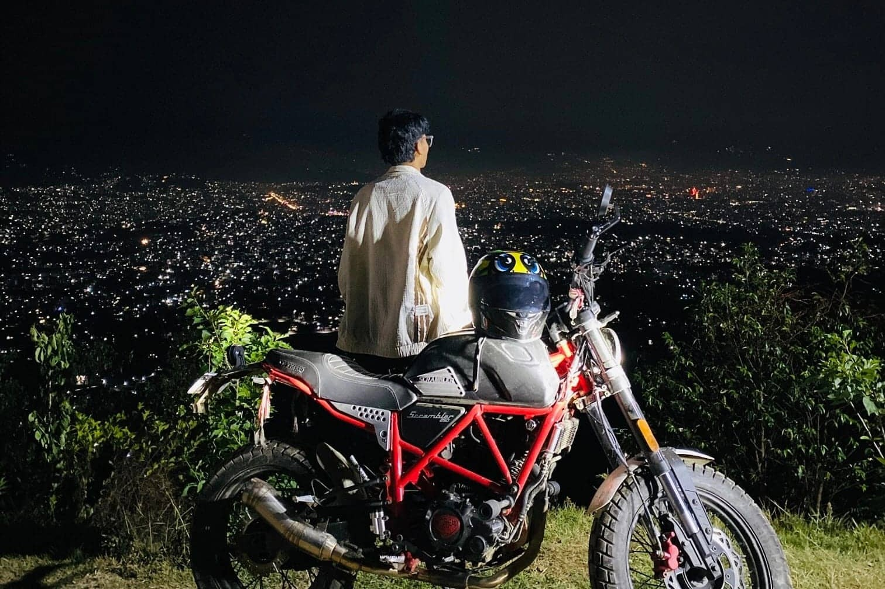
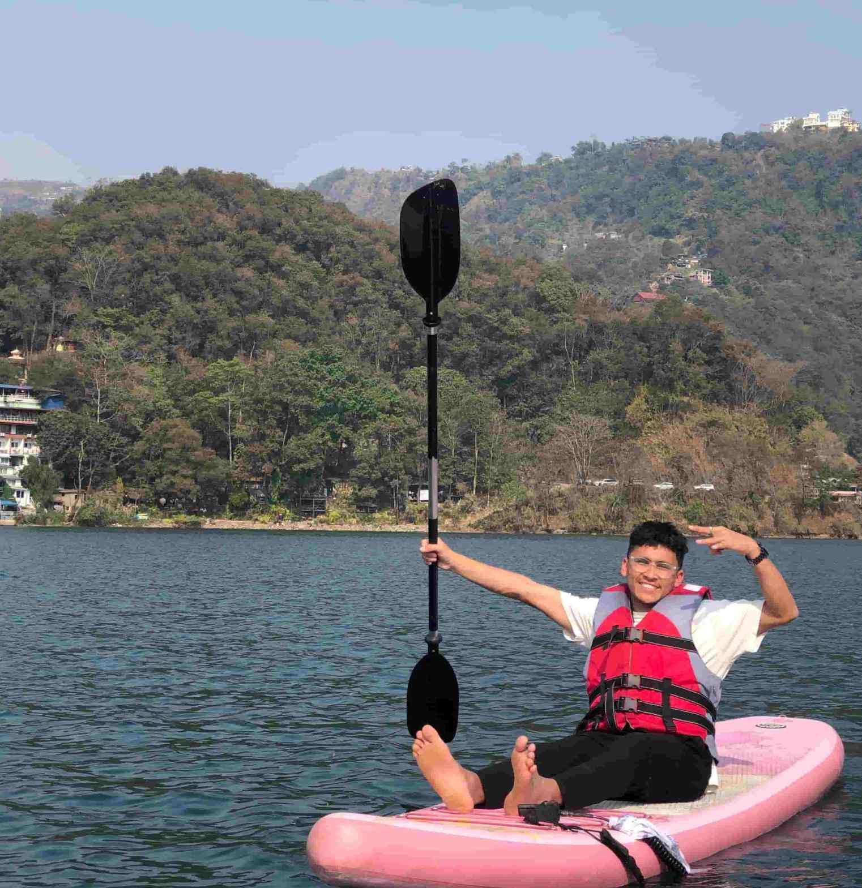
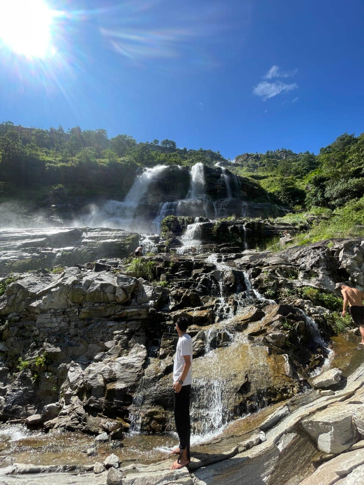
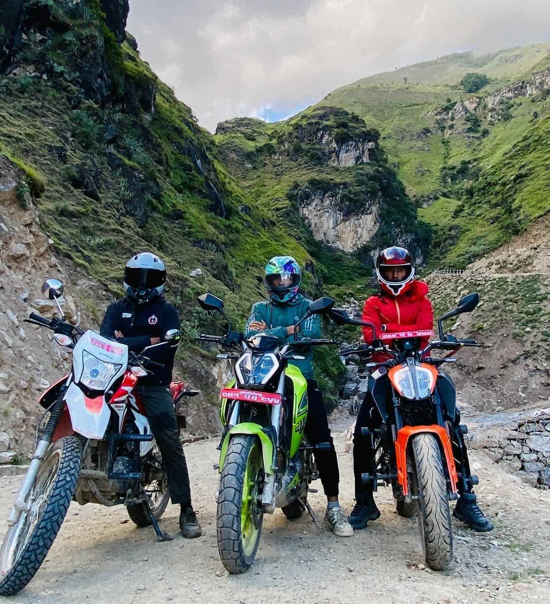
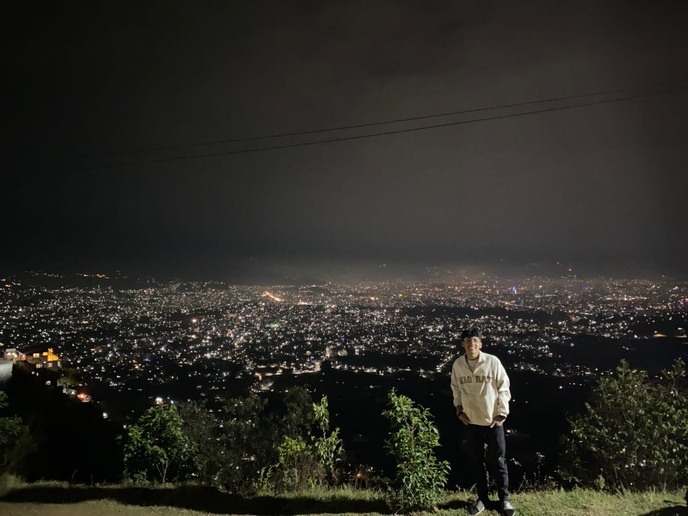
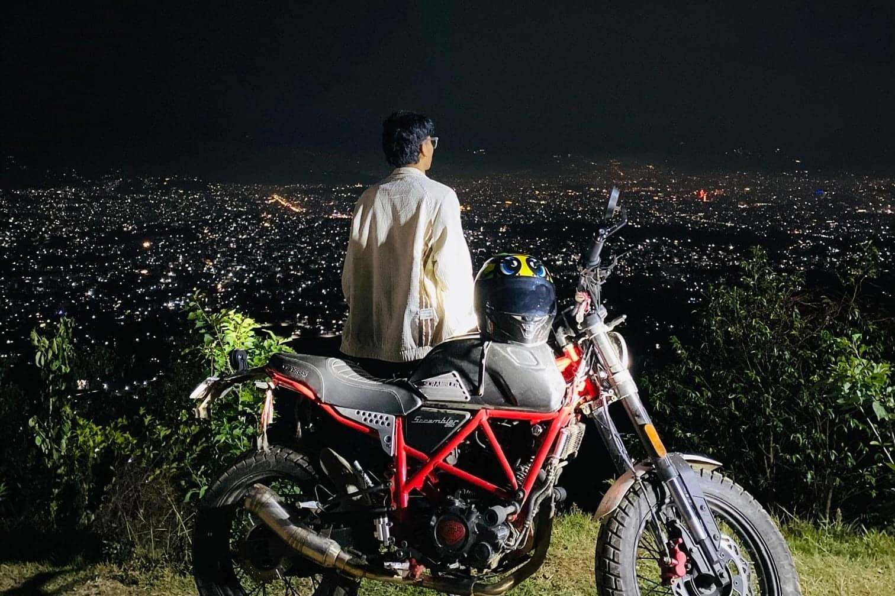
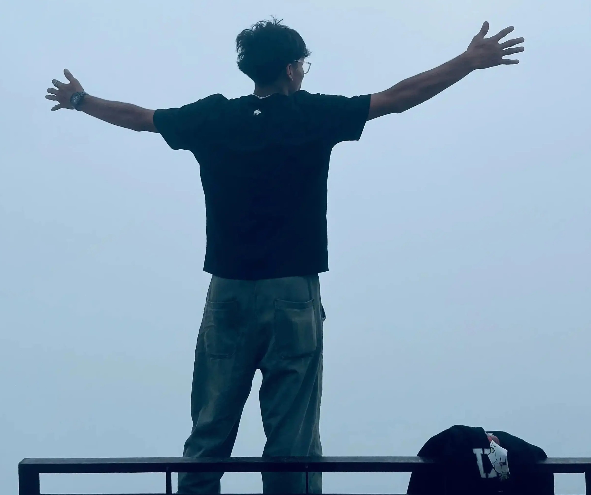
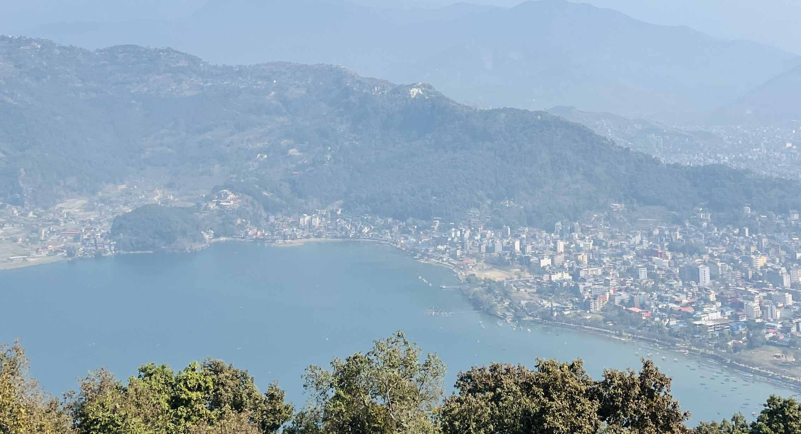

Above the sea of morning clouds
High above Damauli, dense morning fog blankets the valley like an endless white ocean. Standing at Manungkot feels like being suspended above the clouds.
I'm Raja Shahi, a Kathmandu-based traveler and photographer. This is a slow record of high passes, prayer-worn courtyards, and the quiet hours between summits.

High above Damauli, dense morning fog blankets the valley like an endless white ocean. Standing at Manungkot feels like being suspended above the clouds.

Riding up the quiet hill road to Whitehouse Resort, the bustling city below turns into a sprawling galaxy of golden lights under the night sky.

Five high lakes mirror the range. A yak's bell rang once across the valley and everything stilled.





Rooted in Pokhara with sweeping views over Phewa Lake and the Annapurna range, I spend my days exploring Nepal’s ridges, serene lakesides, and high mountain passes. My journey blends outdoor exploration with visual storytelling—capturing authentic moments from quiet valley viewpoints to rugged Himalayan trails.
